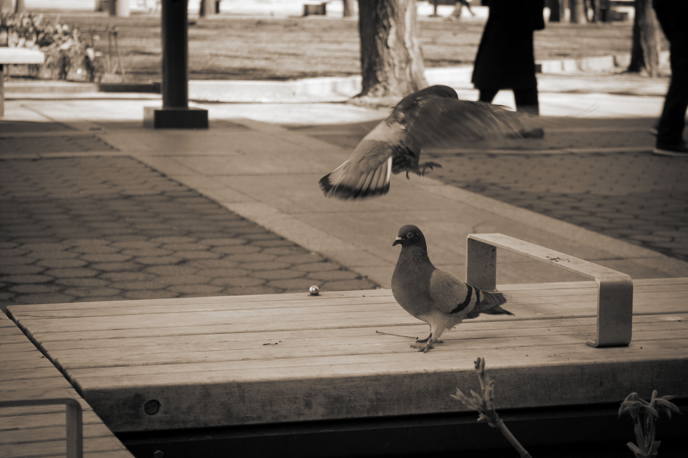
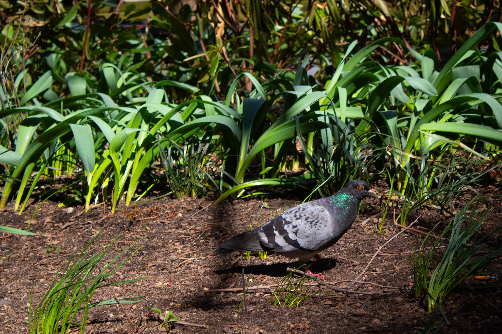
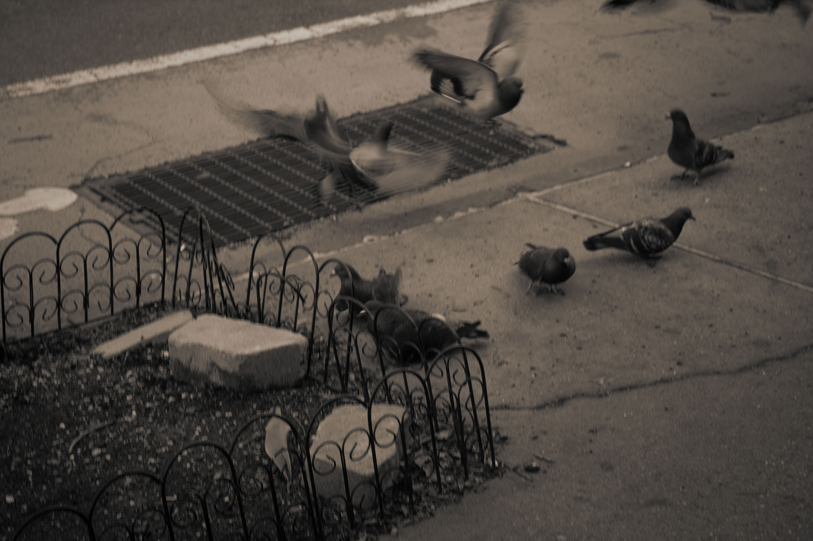
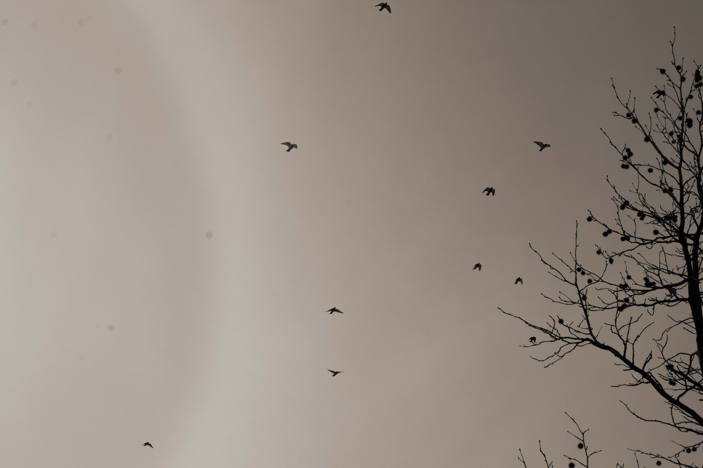
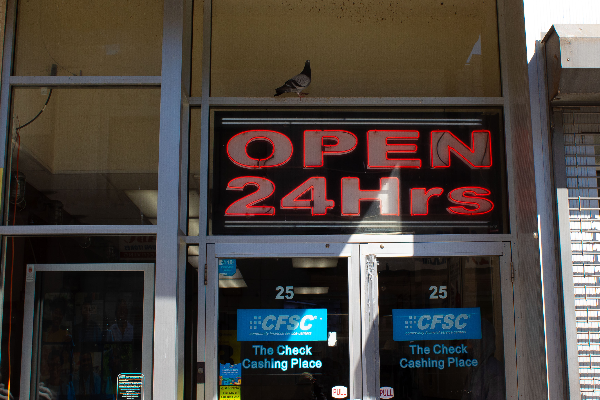
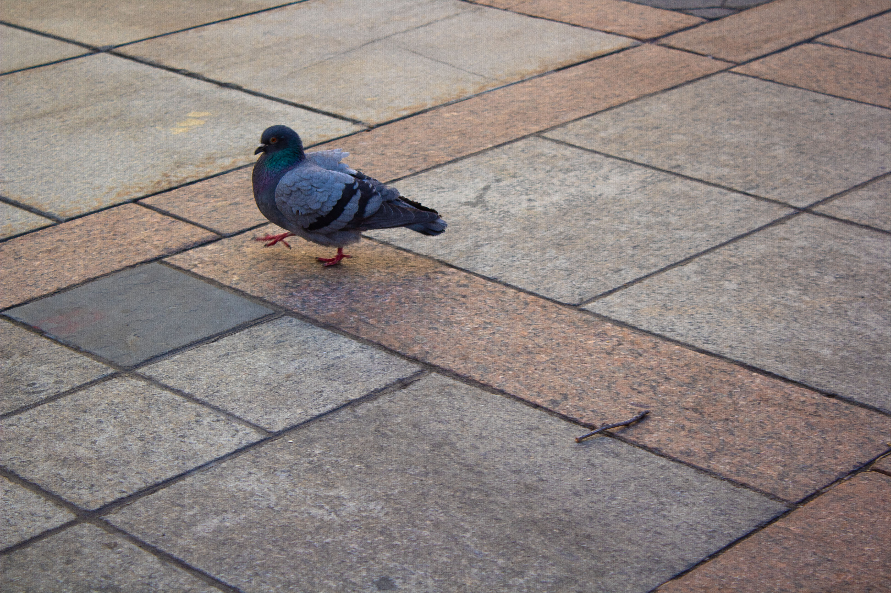
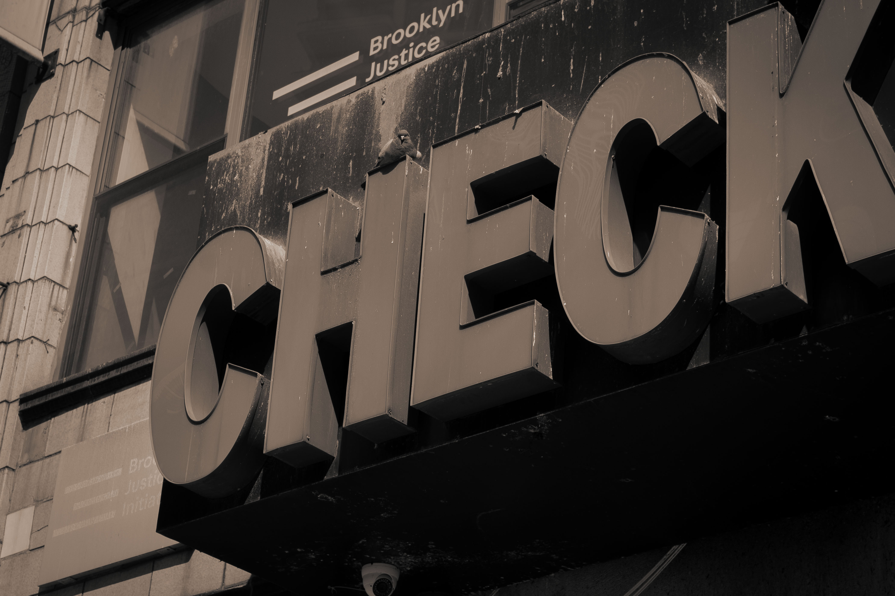

What Do Pigeons Do?
I’ve been asking myself this more lately, though it feels like the kind of question we’re trained not to ask. If you stand quiet enough and look hard enough, you’ll notice the pigeon geometries. This skill is difficult to develop since we are taught to see pigeons as background noise rather than something worth studying.
As I stood waiting for the Manhattan-bound F train at Bergen St, I noticed a faint rustling to my left.
crinkle, tearrr, coo
I was next to a subway trash can, something I normally avoid since they attract rats and roaches, but on this day, it had attracted a pigeon. It observed me with its ember-red, akimbo eyes with a mushy chocolate cupcake wrapper in its little beak. For a moment, it felt like we switched places: I became the bird, and the pigeon became the pedestrian – each of us trying to satisfy a niche in this city, both fighting against, yet a product of our unnatural, industrial surroundings.

I chuckled quietly, realizing the depths of my boredom as I waited for the train. But the feeling didn't pass. Instead, it deepened into something closer to recognition. I felt a sudden existential connection to this small, unremarkable bird and the city-secrets it holds. I saw myself in the way it paced around the dumpster: restless, scanning, reacting.

The city is an ecosystem made by humans, but it was never intended only for us. The movement of pigeons across NYC is fascinating once you allow yourself to notice it. They don’t just exist; they respond. They drift in waves across sidewalks looking for food scraps, each step contingent on the last, and every movement is shaped by the bodies and objects around them. Like dominoes, each action triggers another.
When one lifts, another follows. When a shadow crosses, the entire formation shifts. Their flocks murmurate in loose patterns like a gust of wind: expanding and contracting in response to invisible atmospheric pressures. This reaction to the urban environment are pigeon geometries. It is not the geometry you learned in school, but something lived and immediate: a constant recalibration of distance, angle, and motion in real time. Pigeons measure space not in units, but in risk and opportunity.

Watching them, I’ve started to notice the hidden structures of the city itself. The way a sidewalk narrows near scaffolding creates a bottleneck, not just for people, but for birds. Ledges, railings, and trash cans become nodes in an urban network. A curb is a boundary line; a bench is a gathering point. A passing truck creates a temporary force field, pushing bodies outward before they fold back in. Even the air is reshaped by alleyways, pockets of stillness, and sudden Atlantic gusts that redirect flight paths midair. There is a kind of intelligence embedded in their movement, a collective awareness. No single pigeon is directing the group, yet together they form something coordinated. It reminded me of the way crowds move through the city streets during rush hour: each person adjusting subconsciously to everyone else. We like to think that we are moving independently, but we are constantly responding to subtle cues: a shoulder turning, a foot stepping, a hesitation in someone’s pace. The pigeons make this invisible dance tangible. They exaggerate it, externalize it, turn it into something you can actually watch unfold in real time. In that way, they aren’t just adapting to the city, but they are modeling a way of existing within it.

Even after my train arrived, I kept thinking about that pigeon on the platform. How easily it moved through a space that wasn’t built for it, navigating obstacles that would confuse something less adaptable. Pigeons were first brought here centuries ago, carried across oceans into a foreign environment. They didn’t just survive in this new place; these little doves integrated so fully that they are integral to the city itself.
I think about that a lot. In some ways, they understand NYC better than we do. They don’t fight its complexity; they flow with it. They read its patterns in real time, adjusting without hesitation. They don’t need maps or directions. They don’t question whether they belong. They just respond. And maybe that is why I keep noticing them. The more I watch, the more I realize their movements are not separate from mine. We are all navigating the same shifting geometry by finding space where there seems to be none. We drift past each other on sidewalks and cross streets in parallel lines. Sometimes we startle each other into motion; sometimes we settle into the same stillness. It is a quiet union with a layered, geometric structure.

If you stand still long enough, you can feel the subtle choreography of bodies in space, human and nonhuman alike. Everything is constantly negotiating position, distance, and direction. The pigeon geometries are always there. I hope that you will begin to see them too.
